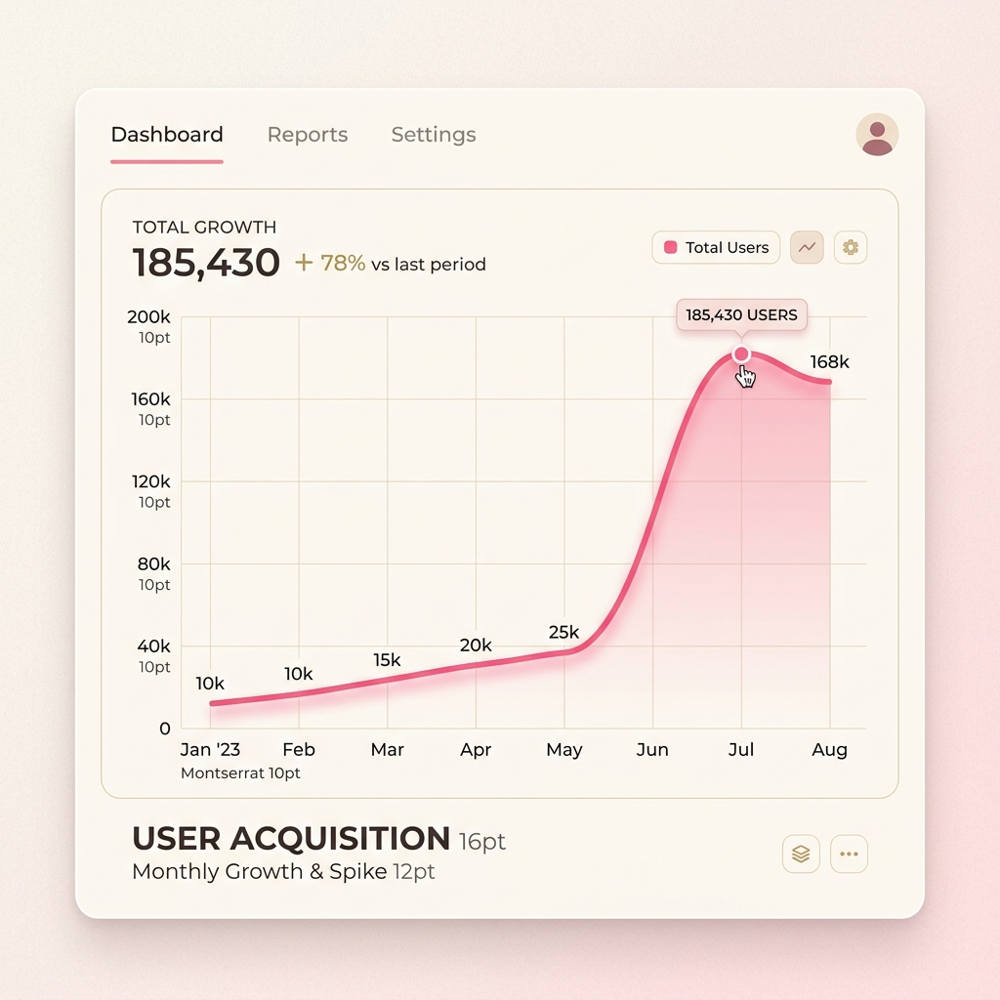

🧭 Digital Marketer & Travel Explorer
Kim Thắm
Khám phá thế giới bằng đôi chân — Kể câu chuyện thương hiệu bằng tư duy dữ liệu
Kết hợp góc nhìn xê dịch phóng khoáng với sự sắc bén của tư duy tiếp thị số:
- Nghiên cứu thực địa & Customer Insights: Lắng nghe nhịp sống và hành vi thực tế của người dùng từ muôn nẻo đường xê dịch.
- Tư duy dữ liệu & Growth thực chiến: Tối ưu hóa SEO, Organic Traffic và AI Automation dựa trên số liệu đo lường minh bạch.
- Visual Storytelling & Phong cách sống: Truyền tải giá trị thương hiệu chân thực, kết hợp nghệ thuật mùi hương và lối sống có gu.
Đi để thấu hiểu con người sâu sắc hơn, làm để tạo ra chuyển đổi thực tế. #NKT
Tư duy & Phương pháp luận
Marketing qua lăng kính người xê dịch
Với mình, mỗi chuyến đi là một cuộc nghiên cứu thực địa (Field Research). Sự thấu cảm đời sống con người chính là chìa khóa mở ra những chiến dịch tiếp thị chạm đáy cảm xúc.
The Field Observation
Rời xa màn hình máy tính để hòa mình vào nhịp sống từng vùng miền. Quan sát cách con người trò chuyện, thói quen tiêu dùng và những phản xạ tự nhiên của khách hàng.
- Phát hiện "Unmet Needs" mà báo cáo số liệu không thấy được
- Đồng cảm sâu sắc với phong cách sống của đa dạng phân khúc
- Thu thập chất liệu kể chuyện (Storytelling) sống động từ đời thực
Data-Driven Strategy
Chuyển hóa góc nhìn thực tế thành chiến lược số bài bản: cấu trúc phễu nội dung, phân tích từ khóa tìm kiếm (Search Intent) và tối ưu tỷ lệ chuyển đổi (CRO).
- Làm chủ các công cụ đo lường: Google Analytics, SEMrush
- Tích hợp mô hình AI Automation vào quy trình xuất bản
- Tập trung vào chuyển đổi thực tế và giá trị kinh tế bền vững
Aesthetic & Lifestyle
Một chiến dịch muốn chạm đến trái tim cần có thẩm mỹ và linh hồn. Kết hợp nghệ thuật mùi hương tinh tế, thực hành Yoga cân bằng năng lượng và sự chỉn chu về hình ảnh.
- Xây dựng thương hiệu cá nhân có gu, truyền cảm hứng tích cực
- Tạo dựng niềm tin tự nhiên và sự gắn kết cảm xúc lâu dài
- Tư duy sống tỉnh thức, luôn giữ tâm trí sáng tạo và mới mẻ
"Xê dịch giúp mở rộng thế giới quan, Marketing biến thế giới quan thành giá trị. Khi đôi chân còn bước đi, tư duy tiếp thị sẽ không bao giờ đóng khung."
Hệ sinh thái trải nghiệm
Khám phá thế giới đa chiều của mình
Dự án & Portfolio số
Tổng hợp 5 slide dự án thực chiến: Tối ưu SEO, xây dựng cộng đồng học tập, chiến lược kênh TikTok và tự động hóa với AI.

Nhật ký Xê dịch & Insights
Những bài học Marketing nhặt được trên đường đi: từ chợ phiên miền núi đến nghệ thuật chạm vào cảm xúc người tiêu dùng.
Scent of the Day
Mùi hương của sự xê dịch: Cam bergamot tươi mát & gỗ tuyết tùng trầm ấm – tinh thần tự do cho những khởi đầu mới.
Ghé thăm Store mùi hươngRemote Work & Mindset
Ứng dụng AI và quy trình số thông minh để làm việc tự do, linh hoạt sáng tạo từ bất cứ quán café hay góc phố nào.
Xem hành trình của mình